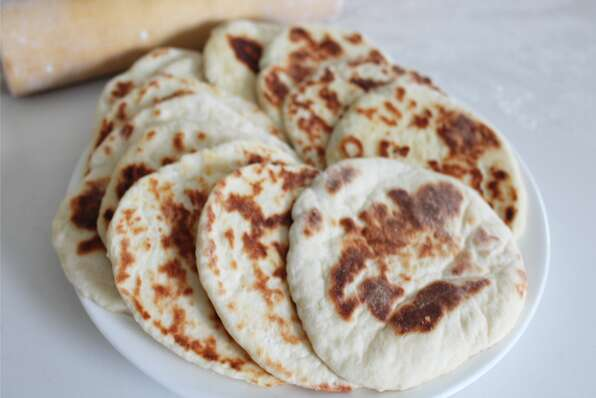

Naan Recipes

Description
This recipe makes the best naan I have tasted outside of an Indian restaurant.
I can't make enough of it for my family. I serve it with shish kabobs,
but I think they would eat it plain.
Per Serving: 52 calories; protein 0.8g; carbohydrates 4.1g; fat 3.7g;
cholesterol 22.3mg; sodium 362.7mg.
Ingredients
- 1 (.25 ounce) package active dry yeast
- 1 cup warm water
- ¼ cup white sugar
- 3 tablespoons milk
- 1 egg, beaten
- 2 teaspoons salt
- 4 ½ cups bread flour
- 2 teaspoons minced garlic (Optional)
- ¼ cup butter, melted
Steps
- In a large bowl, dissolve yeast in warm water.
Let stand about 10 minutes, until frothy. Stir in sugar, milk, egg, salt,
and enough flour to make a soft dough. Knead for 6 to 8 minutes on a lightly
floured surface, or until smooth. Place dough in a well oiled bowl,
cover with a damp cloth, and set aside to rise. Let it rise 1 hour,
until the dough has doubled in volume.
- Punch down dough, and knead in garlic. Pinch off small handfuls of dough
about the size of a golf ball. Roll into balls, and place on a tray.
Cover with a towel, and allow to rise until doubled in size, about
30 minutes.
- During the second rising, preheat grill to high heat.
- At grill side, roll one ball of dough out into a thin circle.
Lightly oil grill. Place dough on grill, and cook for 2 to 3 minutes,
or until puffy and lightly browned. Brush uncooked side with butter,
and turn over. Brush cooked side with butter, and cook until browned,
another 2 to 4 minutes. Remove from grill, and continue the process until
all the naan has been prepared.